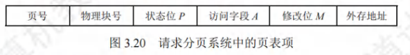
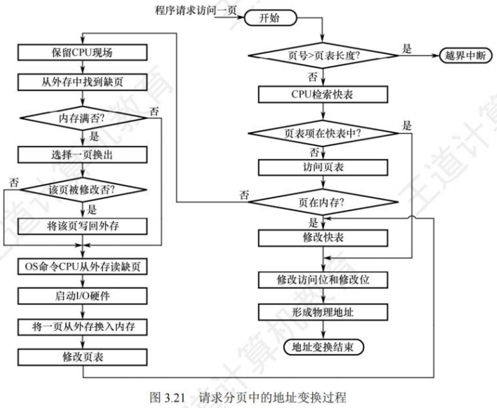
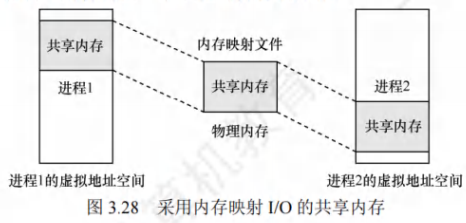

虚拟内存管理
[toc]
虚拟内存的基本概念
虚拟内存是为解决传统存储管理的缺陷（一次性、驻留性）而提出的技术，基于局部性原理，将“内存-外存”构建为两级存储体系，为用户提供远超物理内存的“逻辑内存”。
传统存储管理的核心缺陷
传统存储（连续/离散分配）需满足两个限制，导致内存利用率低、并发度不足：
- 一次性：作业必须全部装入内存才能运行 → 大作业无法运行，多作业并发度低；
- 驻留性：作业运行期间全程驻留内存 → 暂时不用的代码/数据浪费内存，阻塞进程长期占用资源。
局部性原理（虚拟内存的理论基础）
程序运行时对内存的访问具有“局部集中”的特性，分为两类：
| 类型 | 定义 | 示例 |
|---|---|---|
| 时间局部性 | 某指令/数据被访问后，近期可能再次访问 | 循环语句（反复执行同一批指令） |
| 空间局部性 | 某存储单元被访问后，其邻近单元近期可能被访问 | 数组遍历（顺序访问相邻元素） |
局部性原理使“仅装入当前需用的部分代码/数据”成为可能，是虚拟内存技术的核心依据。
虚拟存储器的定义与核心特征
定义
通过“请求调页/调段”（缺页时从外存调入）和“页面/段置换”（内存满时换出暂时不用的部分），使进程仅需部分装入内存即可运行，逻辑上形成远超物理内存的“虚拟内存”。
三大核心特征
| 特征 | 核心含义 | 作用 |
|---|---|---|
| 多次性 | 作业无需一次性装入内存，可分多次调入 | 突破“一次性”限制，支持大作业运行 |
| 对换性 | 作业运行中，暂时不用的部分可换出到外存，需用时再换入 | 突破“驻留性”限制，提高内存利用率 |
| 虚拟性 | 逻辑内存容量远超物理内存，对用户透明 | 满足用户对大内存的需求，提升多道程序并发度 |
虚拟内存的实现条件
虚拟内存需基于离散分配方式（分页、分段、段页式），并依赖以下硬件支持：
- 足够的内存/外存（内存存当前需用部分，外存存剩余部分）；
- 页表/段表机制（记录虚实地址映射及页面状态）；
- 缺页/缺段中断机构（触发外存调入）；
- 地址变换机构（完成逻辑地址→物理地址转换）。
主流实现方式：请求分页（最常用）、请求分段、请求段页式。
请求分页存储管理
请求分页是虚拟内存的核心实现方式，在基本分页基础上增加“请求调页”和“页面置换”功能，仅装入进程的部分页面即可运行。
页表机制（扩展基本分页的页表项）
为支持请求调页和置换，请求页表项需新增4个关键字段，结构如下：

| 字段 | 含义 | 作用 |
|---|---|---|
| 状态位P | 1=页面在内存；0=页面在外存 | 判断是否缺页，触发请求调页 |
| 访问位A | 记录页面近期被访问次数/时间 | 页面置换算法的依据（如LRU、CLOCK） |
| 修改位M | 1=页面在内存中被修改；0=未修改 | 置换时判断是否需写回外存（未修改则直接丢弃） |
| 外存地址 | 页面在外存（对换区/文件区）的地址 | 缺页时定位外存中的页面，实现调入 |
缺页中断机构
当进程访问的页面不在内存（P=0）时，触发缺页中断，是虚拟内存的核心触发机制，与普通中断的区别：
- 触发时机：普通中断在“一条指令执行完后”触发；缺页中断在“指令执行过程中”触发（如指令访问多个页面时，可能多次触发）；
- 处理流程：
① 保护CPU环境，阻塞缺页进程；
② 检查内存是否有空闲页框：- 有空闲页框：分配页框，从外存调入缺页，更新页表（P=1，填物理块号）；
- 无空闲页框：调用页面置换算法，换出内存中一页，释放页框后再调入缺页；
③ 唤醒缺页进程，恢复CPU环境，继续执行。
地址变换机构
在基本分页地址变换的基础上，增加“缺页检测”和“页面置换”步骤，流程如下：

- 快表（TLB）检索：
- 命中：取出物理块号，更新访问位A（写指令需更新修改位M），拼接页内偏移得到物理地址，访存；
- 未命中：转页表检索。
- 页表检索：
- 页面在内存（P=1）：取出物理块号，将页表项写入快表（快表满则淘汰旧项），后续步骤同快表命中；
- 页面在外存（P=0）：触发缺页中断，调入页面后更新页表，再重复地址变换。
页框分配
页框分配是为进程分配“驻留集”（进程在内存中的页框集合）的策略，需平衡“进程缺页率”与“系统并发度”。
驻留集大小的权衡
- 驻留集过小：缺页率高，CPU频繁处理缺页，利用率下降；
- 驻留集过大：系统并发进程数减少，内存资源浪费（超过某阈值后，增页框对缺页率改善不明显）。
三大内存分配策略
| 策略 | 核心逻辑 | 优点 | 缺点 | 适用场景 |
|---|---|---|---|---|
| 固定分配局部置换 | 为进程分配固定数目的页框，缺页时仅从自身页框中置换 | 实现简单，不影响其他进程 | 难确定最优页框数（多则浪费，少则缺页频繁） | 早期简单系统 |
| 可变分配全局置换 | 初始分配一定页框，缺页时从系统空闲页框中分配（全局置换），可动态增页框 | 灵活适配进程需求 | 盲目增页框，降低系统并发度 | 单用户/实时系统 |
| 可变分配局部置换 | 初始分配一定页框，缺页时仅从自身页框置换；缺页率高则增页框，缺页率低则减页框 | 兼顾进程需求与系统并发度，缺页率稳定 | 实现复杂，需监控缺页率 | 现代多任务系统（最常用） |
页框分配算法
用于固定分配策略中，确定各进程的初始页框数：
- 平均分配：将空闲页框平均分给各进程 → 简单但不公平（大进程缺页率高）；
- 按比例分配：按进程大小（页面数）比例分配 → 更公平，适配进程需求；
- 优先权分配：高优先级进程多分页框 → 满足实时/重要进程的低缺页需求（如系统进程＞用户进程）。
页面调入策略
调入时机
- 预调页：基于局部性原理，一次性调入当前页的相邻页面 → 减少I/O次数，但预测成功率低（约50%），仅用于进程首次装入；
- 请求调页：仅在缺页时调入页面 → 调入必被访问，实现简单，主流选择（缺点：单次仅调一页，I/O开销略高）。
从何处调入（外存分区）
外存分为“文件区”（离散分配，存程序/数据文件）和“对换区”（连续分配，存换出页面，I/O更快），调入场景：
- 系统有足够对换区：进程运行前将文件复制到对换区，缺页时从对换区调入（I/O快）；
- 系统对换区不足：未修改的页面从文件区调入（无需写回），修改过的页面换出到对换区，下次从对换区调入；
- UNIX方式：未运行过的页面从文件区调入，已换出的页面从对换区调入（兼顾速度与空间）。
页面置换算法
当内存无空闲页框时，选择“换出哪一页”的算法，目标是降低缺页率，主流算法对比如下：
最佳置换算法（OPT，理论最优）
- 逻辑：选择“未来永不使用”或“最长时间内不再使用”的页面换出；
- 优点：缺页率最低（理论上限）；
- 缺点：无法实现（无法预测未来访问）；
- 用途：评价其他算法的基准。
先进先出算法（FIFO，最简单）
- 逻辑：选择“最早进入内存”的页面换出（维护一个页面队列，队首为最早进入）；
- 优点：实现简单，无需记录访问历史；
- 缺点：违背局部性原理，可能出现Belady异常（页框数增加，缺页率反而上升）；
- 适用场景：页面访问规律简单的场景（如顺序访问）。
最近最久未使用算法（LRU，最符合局部性）
- 逻辑：选择“最近最长时间未使用”的页面换出（记录每个页面的最后访问时间，换出时间最早的）；
- 优点：符合局部性原理，缺页率低；
- 缺点：实现成本高（需硬件支持访问时间记录，如栈/计数器）；
- 实现方式：
- 软件：用栈保存页面，访问页面时移至栈顶，换出栈底页面；
- 硬件：为每页设“访问字段”，记录自上次访问的时间，换出字段值最大的页面。
时钟置换算法（CLOCK）
简单CLOCK（最近未用NRU）
- 逻辑：为每页设1位“访问位A”，初始为1；维护一个循环队列和替换指针：
① 指针指向当前检查的页面，若A=0则换出；
② 若A=1则置A=0，指针后移，循环直至找到A=0的页面； - 优点：实现简单，开销低；
- 缺点：仅考虑“访问与否”，未考虑“是否修改”（修改过的页面换出需写回外存，开销大）。
改进型CLOCK（考虑修改位M）
- 逻辑：为每页设“访问位A”和“修改位M”，按优先级从低到高选择换出页面：
- 优先换出“A=0且M=0”（未访问且未修改，无写回开销）；
- 若无，则找“A=0且M=1”（未访问但修改，需写回）；
- 若仍无，循环置所有页面A=0，重复步骤1-2；
- 优点：兼顾“访问频率”和“置换开销”，缺页率接近LRU，实现简单；
- 适用场景：现代操作系统（如Linux、Windows）。
抖动与工作集
抖动（颠簸）
定义
频繁的页面换入换出（刚换出的页面立即需换入，刚换入的页面立即需换出），导致CPU大部分时间处理缺页，几乎无法执行有效任务。
根本原因
进程驻留集过小，无法容纳当前需用的“工作集”，导致频繁缺页。
解决方法
- 增大驻留集（为缺页频繁的进程增页框）；
- 采用工作集模型，动态调整驻留集大小；
- 减少多道程序并发度（淘汰部分进程，释放页框）。
工作集模型
定义
工作集是进程在“最近时间窗口Δ”内访问的页面集合，记为W(t, Δ)，其中：
- t：当前时间；
- Δ：窗口大小（经验值，如1000条指令）。
核心逻辑
- 驻留集大小需≥工作集大小，否则进程会频繁缺页；
- 操作系统监控进程的工作集，动态调整驻留集（工作集增大则增页框，减小则减页框），确保缺页率稳定。
示例
进程页面访问序列：1,2,3,4,5,3,4,5,6,7,6,7,3,7,6,7,2,7,6,7
若Δ=5，则t时刻工作集W(t,5)={3,7,6,2}。
内存映射文件（虚拟内存的应用）
定义
通过系统调用将“磁盘文件”映射到进程的“虚拟地址空间”，进程以“访问内存”的方式读写文件，无需调用read/write等I/O函数。
核心原理
- 映射时不实际调入文件，仅建立虚拟地址与文件偏移的映射关系；
- 访问映射区域时，触发缺页中断，操作系统从磁盘调入对应文件块；
- 进程退出或关闭映射时，修改过的页面批量写回磁盘（延迟写）。
优势
- 编程简单：无需处理I/O缓冲区，直接操作内存；
- 高效共享：多进程映射同一文件时，操作系统将虚拟地址映射到同一物理内存，实现进程间高效通信（如共享库、进程间数据传递）。

地址翻译实例（结合TLB与Cache）
已知条件
| 条件 | 说明 |
|---|---|
| 虚拟地址 | 14位 |
| 物理地址 | 12位 |
| 页面大小 | 64B=2⁶ → 页内偏移6位 |
| TLB | 四路组相联，16个条目 → 组号=16/4=4组（2位），标记=页号-组号=8-2=6位 |
| Cache | 直接映射，行大小4B=2²，16组（4位） → 块内偏移2位，组号=物理块号 mod 16（4位），标记=物理块号-组号=6-4=2位 |
步骤1：位分配（关键前提）
- 虚拟地址（14位）：页号P（8位）=虚拟地址[13:6]，页内偏移W（6位）=虚拟地址[5:0]；
- 物理地址（12位）：块号B（6位）=物理地址[11:6]，块内偏移W（6位）=物理地址[5:0]（与虚拟页内偏移一致）；
- TLB索引（组号）：P[1:0]（页号低2位），TLB标记：P[7:2]（页号高6位）；
- Cache组号：B[3:0]（块号低4位），Cache标记：B[5:4]（块号高2位），Cache块内偏移：W[1:0]（页内偏移低2位）。
步骤2：逐地址翻译（以0x03d4、0x00f1、0x0229为例）
（1）地址0x03d4（十六进制）
- 转二进制（14位）：00 1111 01 010100 → 拆分页号P=00111101（0x3D，8位），页内偏移W=010100（0x14，6位）；
- TLB查找：
- 组号=P[1:0]=01（1），标记=P[7:2]=001111（0x0F）；
- 若TLB组1中存在标记0x0F的条目，命中 → 取出物理块号B（6位）；
- 未命中 → 查页表，页表项P=0x3D对应B（如0x12），将（标记0x0F，块号0x12）写入TLB组1（满则淘汰）；
- 物理地址计算：B<<6 | W = 0x12<<6 | 0x14 = 0x1200 | 0x14 = 0x1214（12位）；
- Cache查找：
- 块号B=0x12（二进制010010），组号=B[3:0]=0010（2），标记=B[5:4]=01（1）；
- 查Cache组2，若标记=1则命中，读取数据；未命中 → 从物理地址0x1214读入Cache组2，更新标记。
（2）地址0x00f1（十六进制）
- 转二进制：00 0011 11 000001 → P=00001111（0x0F，8位），W=000001（0x01，6位）；
- TLB查找：组号=P[1:0]=11（3），标记=P[7:2]=000011（0x03）；
- 命中 → 取B（如0x08）；未命中 → 查页表得B；
- 物理地址：0x08<<6 | 0x01 = 0x0801；
- Cache查找：B=0x08（001000），组号=0000（0），标记=00（0） → 查Cache组0，判断命中。
（3）地址0x0229（十六进制）
- 转二进制：00 1000 10 101001 → P=00100010（0x22，8位），W=101001（0x29，6位）；
- TLB查找：组号=P[1:0]=10（2），标记=P[7:2]=001000（0x08）；
- 命中 → 取B（如0x1A）；未命中 → 查页表得B；
- 物理地址：0x1A<<6 | 0x29 = 0x1A00 | 0x29 = 0x1A29；
- Cache查找：B=0x1A（011010），组号=010（？不，B=0x1A是6位011010，组号=低4位1010（10），标记=高2位01（1） → 查Cache组10，判断命中。
虚拟内存性能影响因素
| 因素 | 对缺页率的影响 | 优化建议 |
|---|---|---|
| 页面大小 | 页面越大，缺页率越低（减少页面数），但页内碎片越大 | 选择适中页面（如4KB/8KB，平衡碎片与缺页率） |
| 驻留集大小 | 驻留集≥工作集时，缺页率稳定；否则缺页率骤升 | 动态调整驻留集（可变分配局部置换） |
| 页面置换算法 | OPT最优，LRU/CLOCK次之，FIFO最差 | 采用改进型CLOCK算法（兼顾性能与实现成本） |
| 程序局部性 | 局部性越好，缺页率越低 | 编程时按存储顺序访问（如数组按行访问，避免按列） |
| 写回策略 | 频繁写回修改页 → 磁盘I/O开销大 | 批量写回（积累一定修改页后统一写回） |